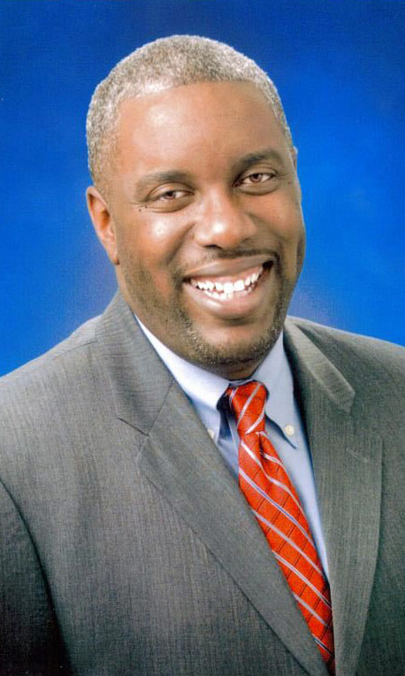
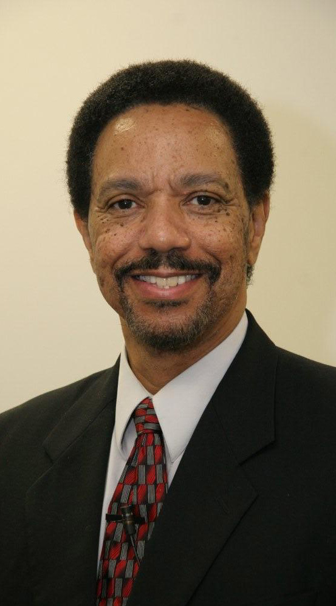
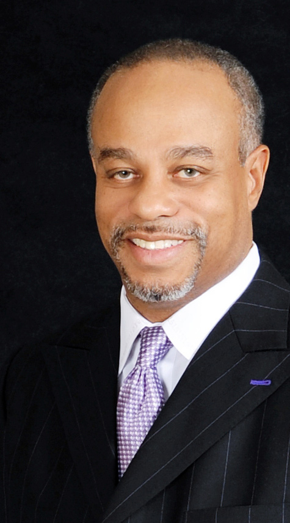

Speakers
Leslie Engelsen
Thursday, June 22, 2017: Evening Plenary Session 7:00pm
Leslie (Pelt) Engelsen, a Chicago native and MBI/Wheaton alumna, served 17 years with SIM in central Nigeria. There she worked in developing discipleship curriculum for the churches, mobilizing university students for missions outreach, and along with a community of vibrant Nigerian brothers and sisters in Christ, founded a Nigerian missions agency focused on making Christ known to women in prostitution, abandoned children individuals with HIV/AIDS, and men caught up in a lifestyle of theft and drugs.
Leslie met her husband Todd on one of his many visits to Nigeria and she now resides in Boston where Todd leads a ministry called PEER Servants. PEER Servants partners with indigenous Christian organizations in Africa, Asia, Latin America, the Caribbean and Eastern Europe as they work to empower the materially poor of their nations through micro-finance as well as other ways of extending God's kingdom. Leslie serves as the Director of Volunteer Relations and mobilizes volunteers who are using their gifts and skills to strengthen these partnering organizations and who are also learning amazing lessons from our global family on following more closely in the steps of Christ.
Leslie and Todd have a daughter, originally from South Sudan. She along with our son-in-law and two grandchildren now live in British Columbia.

Pastor Thabiti Anyabwile
Friday, June 23, 2017: Morning Plenary Session 8:20am
Thabiti Anyabwile serves as one of the pastors for Anacostia River Church. He has served as an elder and pastor in churches in NC, DC and the Cayman Islands. After a few years as a practicing Muslim, Thabiti was converted under the preaching of the gospel in the Washington DC area. He and his wife, Kristie, have three children. Thabiti is the author of several books, including: Reviving the Black Church; The Life of God in the Soul of the Church; The Gospel for Muslims; What Is a Healthy Church Member?; The Decline of African-American Theology; and The Faithful Preacher. He blogs at The Front Porch and Pure Church.

Rev. Dr. Phillip Scott Nelson
Friday, June 23, 2017: Afternoon Plenary Session 1:45pm
Rev. Dr. Phillip Scott Nelson has a passionate desire to see God’s people mobilized for global Kingdom advancement. Dr. Nelson takes the message of God’s call throughout the world. He challenges all believers to maximize their impact for Christ.
Early in his ministry, he served as a national traveling speaker for Campus Crusade for Christ (CRU). Attending the Congress on World Evangelism in Lausanne, Switzerland in 1974, exposed him, for the first time, to global Christianity and crystallized his call to mission involvement. Several years later he and his wife both had the privilege of attending the third Lausanne Conference in Cape Town, South Africa in 2010.
As an Associate Missionary with SIM as well as a travelling instructor for Perspectives on the World Christian Movement with Frontier Ventures, Dr. Nelson serves as a strategic mobilizer of African-American churches and her constituents for involvement in global missions.
Dr. Nelson also serves as a Church Growth Consultant for the First Episcopal District of the CME Church. In addition, God has allowed Rev. Nelson to pastor for 30 of the 50 years that he has preached the good news. He is married for over 36 years to Gladys Anderson Nelson. They are the proud parents of five adult, saved children and one son-in-law. Rev. Nelson resides in Charlotte, N.C. and is a native of Detroit, Michigan.

Pastor John K. Jenkins Sr.
Friday, June 23, 2017: Evening Plenary Session 7:00pm
Pastor John K. Jenkins Sr.’s life calling is to see the lost come to Christ and disciples becoming spiritually mature. Since his installation as the senior pastor of First Baptist Church of Glenarden in 1989, the church membership has grown from 500 to more than 10,000 members. With campuses in Landover and Upper Marlboro, Md., and a staff of 300 full- and part-time employees, FBCG is widely recognized as a community pillar with 100+ ministries meeting diverse needs throughout the Washington, D.C. metropolitan area, nationally and abroad.
Pastor Jenkins serves on the board for numerous organizations, including Bethel University, Project Bridges, The Skinner Leadership Institute, Greater Prince George’s Business Roundtable, the National Association of Evangelicals and a local hospital. In addition, Pastor Jenkins serves as chairman emeritus of SHABACH! Ministries, Inc., a 501(c)3 organization that he founded in 1996 to provide food, clothing, educational and employment opportunities in the Maryland area. He also served for two years as vice president/executive director of National Ministries with Converge Worldwide.
In 2001, Pastor Jenkins received an honorary Doctorate of Divinity from Southern California School of Ministry in Inglewood, Calif. He and his wife, Trina, are the proud parents of six children and one granddaughter.